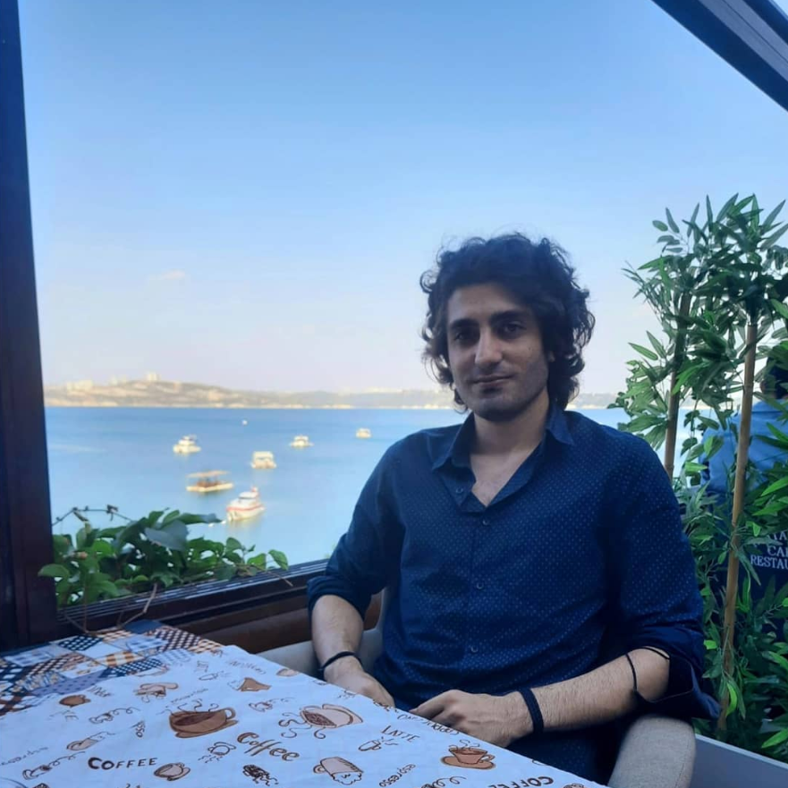

Orhan Kürşad Yavuzlu

Summary
I graduated from the Computer and Software Engineering Department of Toros University in 2020. Due to the onset of the pandemic and some family circumstances, I took a break from my job search for a while. As of September 2022, after completing my military service, I am looking for a job in order to return to my sector and gain experience. I am particularly interested in web and mobile application development, I have basic knowledge of C# and Python languages.
Education
- Toros University - Computer and Software Engineering (15/08/2014 - 14/01/2020)
Work Experience
Web Application Development Intern
- Akyurek Technology (03/09/2019 - 27/12/2019)
- I worked on the web application using C#, HTML, CSS (Bootstrap 4) technologies. I used Git as version control.
Software Development Intern
- Toros University (23/07/2018 - 17/08/2018)
Skills
- Advanced Programming
- Project Management (Agile)
- Object Oriented Programming (C#, Python)
- Data Structures and Algorithms
- Databases (SQL)
- Algorithm Analysis, System Design (RAD - JAD)
Hobbies
Contact